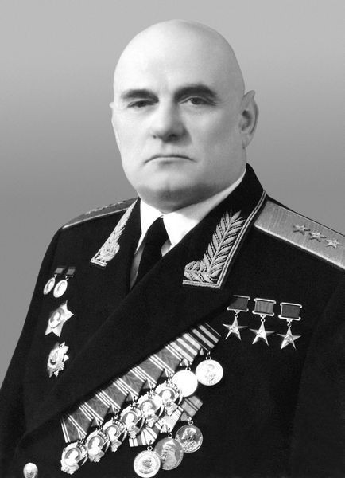
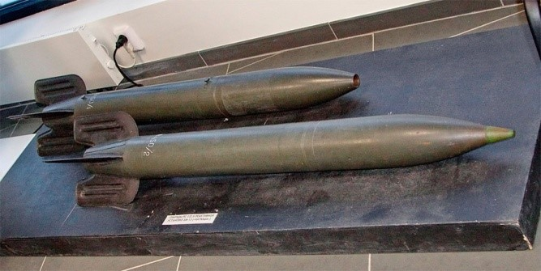
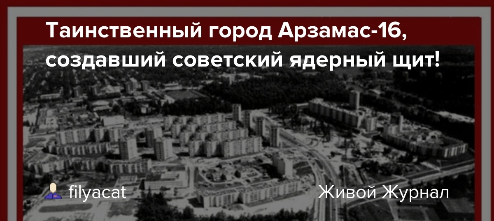
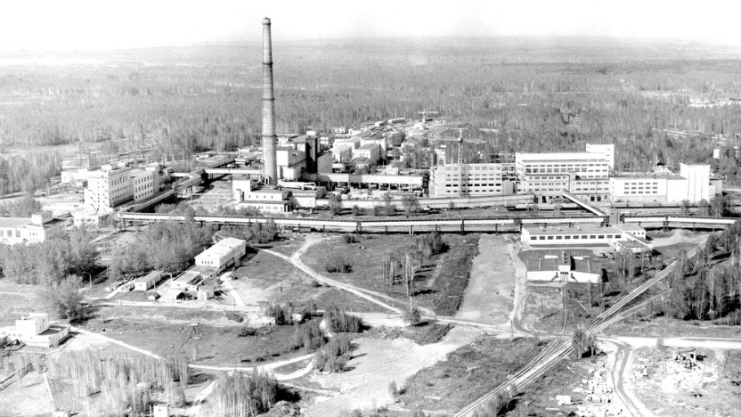

«После окончания Великой Отечественной войны перед советским народом встала задача — покончить без единой
капли крови с атомной монополией США»
Борис Львович Ванников (
1897
-1962
) —
государственный деятель, руководивший созданием ядерного оружия,
генерал-полковник. В 1945
-1953
годах — начальник ПГУ при
СМ СССР. Трижды Герой Социалистического Труда,
дважды лауреат Государственной премии СССР.
Деятельность во время Великой Отечественной Войны:
Осенью 1941
года был учрежден наркомат боеприпасов, который с февраля 1942
года возглавил Ванников.
Благодаря его руководству, в 1942
году выпуск боеприпасов увеличился в 3
раза, а в 1943
году – в 4.
За эти достижения Ванникову было присвоено звание Героя Социалистического Труда.
Под руководством Ванникова были созданы новые НИИ и КБ, впервые в СССР внедрена
автоматическая сварка при
производстве бомб, производство боеприпасов переведено на поточный метод и налажен серийный выпуск
реактивных снарядов для “Катюши”.

В
1944
году он получил звание генерал-полковника. В августе 1944
года Ванников стал заместителем
председателя Специального Комитета при ГОКО СССР, а с начала 1946
года занял должность председателя этого
комитета.
Деятельность в атомной промышленности:
Б. Л. Ванников стоял у истоков зарождения атомной промышленности СССР. Под его руководством
были созданы
первые атомные промышленные центры страны, проведены разработки и успешные испытания ядерного
оружия,
заложены основы использования ядерных технологий для выработки электроэнергии и для медицинских и
иных
народнохозяйственных целей.
Борис Львович вложил в дело становления новой отрасли много сил и умения. Свой богатый опыт он
внедрял
из «оборонки» в новые отрасли промышленности, внимательно следил за работами не только на
производстве,
но и в научных коллективах.
В
1945
году он возглавил ПГУ для руководства атомной промышленностью и
координации разработок. Это стало
началом Минсредмаша (Росатома).
Под руководством Ванникова были созданы первые атомные центры страны, разработано и
испытано ядерное
оружие, заложены основы применения ядерных технологий в энергетике и медицине.
Под личным контролем Ванникова был создан Арзамас-16 (Саров). Для решения проблемы
измерения скорости
взрыва в атомной бомбе он предложил построить специальную измерительную установку в Арзамасе-16,
позволяющую проводить небольшие атомные взрывы и наблюдать за процессами в реальном времени.

За четыре года (
1945
-1949
) Советский Союз
достиг ядерного паритета с США. Судьба бомбы зависела от
плутония,
производимого комбинатом № 817 (“Маяк”). Курчатов и Ванников контролировали ход работ по пуску первого
реактора. Незадолго до испытания РДС-1 Ванников тяжело заболел и не смог участвовать в заключительном
этапе.

За вклад в производство плутония и создание первой атомной бомбы Ванников вторично получил звание Героя
Социалистического Труда (медаль №1). Он стал первым дважды Героем Соцтруда в СССР.